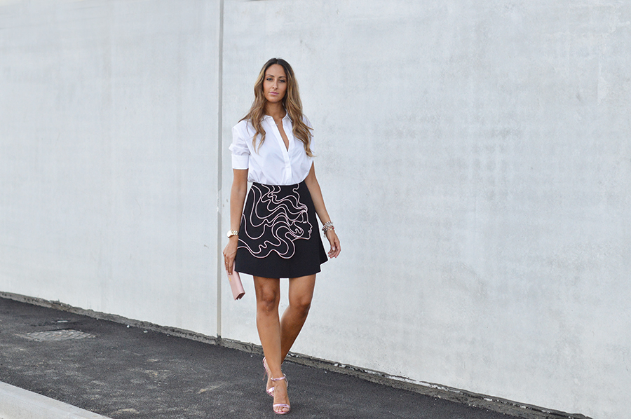

{% extends "base_template.html" %}
{% block content %}
 
  <style>
    .container {
      max-width: 960px;
      margin: 20px auto;
    }

    img {
      max-width: 100%;
    }

    .row,
    .preview {
      overflow: hidden;
    }

    .col {
      float: left;
    }

    .col-6 {
      width: 50%;
    }

    .col-3 {
      width: 25%;
    }

    .col-2 {
      width: 16.7%;
    }

    .col-1 {
      width: 8.3%;
    }
  </style>
  <div class="container">
    <h1>Customize preview for Cropper</h1>
    <div class="row">
      <div class="col col-6">
        
      </div>
      <div class="col col-3">
        <div class="preview"></div>
      </div>
      <div class="col col-2">
        <div class="preview"></div>
      </div>
      <div class="col col-1">
        <div class="preview"></div>
      </div>
    </div>
  </div>


{% endblock %}
